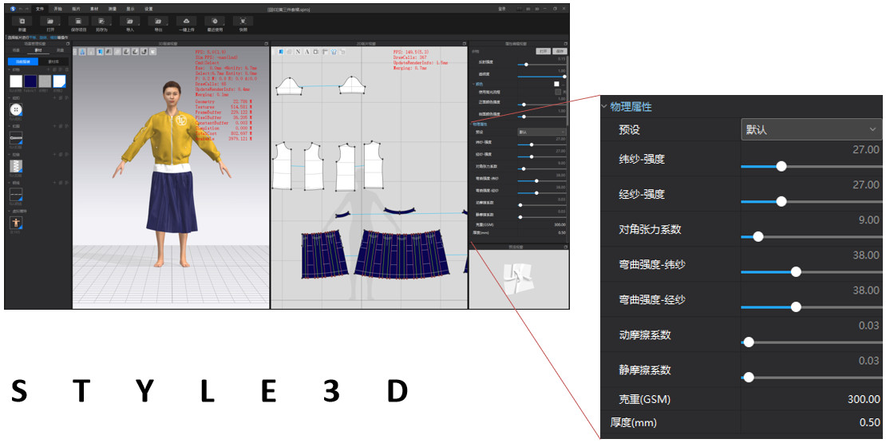
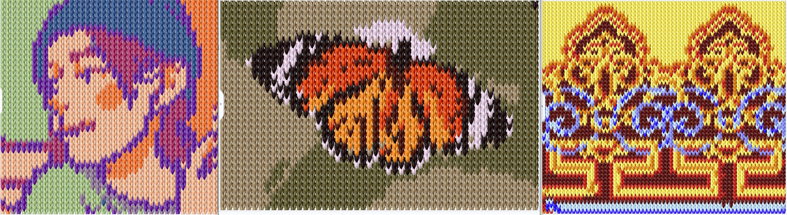

By 关关是暴力兔 Published on 五月 20, 2021浙江凌迪科技Style3D实习工作合集分工物理引擎组PhysX刚体系统的尝试性接入Style3D布料物理引擎真实物理属性调优，效果可支持布料缝纫、折叠、硬化、固化等面料参数整理小工具渲染组Lux开源离线渲染器在Style3D软件中的接入与修改，据此实现光照贴图生成功能Alembic格式、Fbx格式在Style3D软件中的接入；Vray的问题定位与调优图像组基于纹理合成的刺绣图案生成算法的设计与实现图像的毛衣图案生成实现